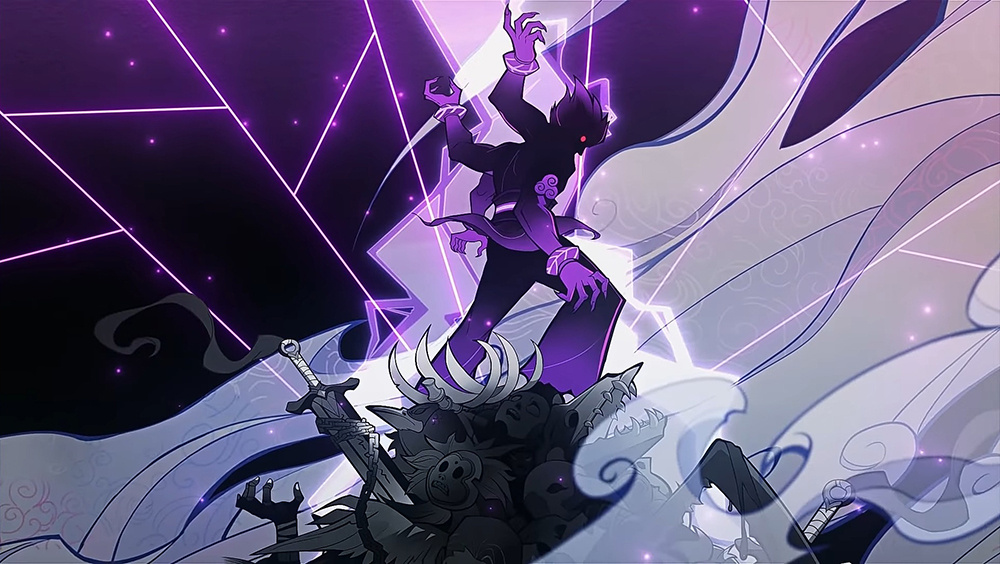

О безымянном Якса и бедствии Разлома
Все давно в теме, что в Разлом очень давно прилетела небесная каменюка, улетела,
а на месте ее релакса открылась дыра в Бездну. Из Бездны повалили монстрюки,
и Миллелитам вместе с Якса пришлось сражаться. Изначально об этом вкратце рассказывала
"Хроника Заоблачного предела", но потом ещё прибавился сет Миллелита и теперь чувачки в Разломе.
❝ В незапамятные времена, когда даже Властелин Камня был ещё юн, в пустоши, что к западу от Ли Юэ, упал метеорит.
<...>
Он, в отличие от простых и непоколебимых земных камней, обладал высокомерием и горячностью.
<...>
Небесный метеорит не вынес этого, и, не вняв уговорам Разлома, убежал обратно на небо.
<...>
Но чёрная беда поднялась из Бездны, и жители Дуньюй запечатали древний город, покинули родные места и рассеялись по земле. Никто не знал, почему же эти люди закрыли свой родной город, и даже Адепты и Якса, видевшие тысячи лет хаоса, ничего не рассказали. ❞
Интересна такая штука: в этих самых "хрониках" одновременно говорится и то, что от метеорита образовалась дырёха с кучей ископаемых (ну то есть Разлом сам), и вот это:
❝ Говорят, когда тот безымянный метеорит рухнул на землю, его осколок откололся и упал среди скал в северной части предместья Лиша. ❞
Разлом находится не на севере Лиша, а на западе. Что за осколок тогда? Просто криво написали или там что-то потерялось ещё и на севере?
Метеорит улетел во время Войны архонтов, которая началась примерно 3000 лет назад (2600 лет назад был разгар Войны, а примерно 2000 лет назад она закончилась), значит прилетел он ну незадолго до начала Войны, видимо. Катастрофа с дырой в Бездну произошла 500 лет назад, что подтвержда.т сет Миллелита и слова неписей в Разломе. Тогда же, когда произошла катастрофа в Кхаэнри'ах и катаклизм, что повлёк за собой многие траблы в истории Инадзумы. Ну то есть, всё вот это рвануло в одно время.
Когда произошла катастрофа в Разломе, Моракс поручил разбираться с ней Миллелитам и Якса, а если точнее — одному безымянному Якса, которого почему-то в описании сета написали во множественном числе.
❝ Жизнь смертных - это одно лишь мгновение, но Властелин Камня всё же вверил Миллелитам охрану рудных жил. Бездна фонтаном хлынула в этот мир, и Миллелитам пришлось эвакуировать местных жителей. По рассказам шахтёров, небольшая часть солдат, что осталась у Разлома прикрывать отступление, сражалась плечом к плечу с безымянным Якса, чтобы в конце концов отдать свои жизни под этими крутыми скалами. ❞
История безымянного Якса, вместе с которым сражались Миллелиты, рассказывается в новом сете артефактов "Киноварное загробье".
Когда-то в долина Тяньцю жил Якса. Он пришел к народу, что раньше жил на территории Разлома и ближайших территорий (руины в предместье Лиша - это бывшие города того горного народа, насколько я поняла), "изгонять зло" и по всем канонам заключил с ними договор, соглашаясь разобраться с забитым Бездной сливом. Прикольно, кстати, то, что для заключения договора люди предложили Якса испить вина из чаши. Изначально такой же ритуал провели старейшины городов и деревень Ли Юэ, присягая на верность Мораксу, и образовали союз или орден (нужное подчеркнуть) Миллелитов:
❝ Когда Миллелиты только появились, земли Ли Юэ ещё не успели одичать. Старейшины городов, деревень и племён испили из золотого кубка, скрепляя клятву о союзе. ❞
А позже, во время катастрофы Разлома, Миллелиты повторили ритуал перед тем, как камикадзиться:
❝ Те воины, что остались сражаться плечом к плечу с Якса, испили прекрасное вино из того золотого кубка, и, посвятив последнюю чашу любимому и грозному Властелину Камня, по зову долга устремились в Бездну. ❞
Пока в тему, хочу отметить, что, помимо истории катастрофы Разлома как таковой, из сета "Стойкость Миллелита" можно и пару других просто интересных душевных моментов, описанных в других частях набора.
Так, часы - действительно артефакт своего рода. Чтобы не потерять остатки себя из-за бесчисленных убийств, Миллелиты, сражавшиеся с монстрами из Бездны в Разломе, носили эти часы и запоминали точное время убийства. Возможно, соратников это тоже касалось, своего рода дань памяти. Причем судя по схожести, думаю, часы Миллелитов делались вместе с часами безымянного Якса из сета "Загробья".
Цветок - тоже символ. Это украшение, которое современные Миллелиты носят как дань памяти и знак уважения Миллелитам, сражавшимся и погибшим в Разломе много-много лет назад.
Возвращаясь к Загробью, всё тот же кубок из сета раскрывает главный факт о том самом супермэне вся Разлом - безымянном Якса:
❝ Говорят, что одинокий четырёхрукий путник пришёл в эти дикие места, куда когда-то упала звезда. ❞
Для тех, кто не помнит, можно посмотреть официальный тизер об истории Якс. Моракс призвал для защиты Ли Юэ от демонов Якс - сильных существ, которые этих самых демонов бы истребляли. Не ясно точно, много ли их было или всего лишь пятеро, но зазвездились в любом случае именно пятеро. Из этих пятерых трое погибли, один пропал без вести и один точно остался в живых и трудиться в поте лица - Сяо. А теперь вспоминаем там четырехруких. Это тот самый фиолетовый (вау, в цвет сета) Электро Якса, что пропал без вести. Интересно, кстати, то, что в русских субтитрах этого тизера написано, что некоторые из Якс "стали одержимы", тогда как в английской озвучке говорят "come to the darkness", что, получается, ближе к ситуации.

Но не только четыре руки, на самом деле, указывают на это, но и возможность каким-то образом управлять Электро-стихией, что можно видеть в тизере и что описывается в короне сета "Киноварное загробье":
❝ С мечом в руках он вошёл в Разлом, чтобы положить конец страданиям людей. Могучий, как демон, в глазах его пылал фиолетовый огонь. Молния пронзила туман смерти, а гром рассеял тьму. ❞
В описании короны вообще не говорится прямо, что Якса погиб — лишь то, что он как-то прям особо крепко вдарил по чему-то в Разломе, и больше его никто не видел.
❝ С мечом в руках он вошёл в Разлом, чтобы положить конец страданиям людей.
<...>
Великая пропасть рушилась, земля грохотала. И вдруг наступила тишина.
<...>
Больше вы не услышите пустынное звучание барабанов севера, герой исчезает в вихре. Больше вы не увидите Якса, который сражался до самого рассвета. Увы, врем потрачено напрасно.❞
И за весь квест в Разломе, на протяжении которого нам несколько раз говорят про безымянного Якса, мы так и не находим никаких его следов, кроме черно-фиолетовой жижи, которую, я думаю, Якса и шел изгонять. В конце квеста он снова упоминается, причем явно с замесом на продолжение Разлома. Уже раздражавшая меня под конец Чжи Цюн в диалоге делится, что говорят, Якса запечатан в Разломе, хотя мы его так и не нашли.
Вот из этого всего получается, что гипотетически, этот Якса всё ещё может быть живым и находиться где-то внизу. В принципе, в квесте нам говорят, что Цисин запечатали Разлом формацией из-за того, что там начало сейчас происходить что-то стремное и странное. А значит до этого никакой формации не было и Разлом просто стоял как есть и никого не напрягал, там вполне велись работы. Вот сколько Фатуи туда набежало за это время (гспд, лезут в каждую дыру буквально). Так что в целом, Якса мог и уйти из Разлома восвояси. Однако как-то после ситуации с Оробаси, когда нам тоже говорили про запечатанного дракона, уже вполне себе верится в подобные якобы байки и сказки.
В описании Загробья, помимо Яксы, есть ещё действующее лицо — Миллелит. У него там даже недозавещание есть в описании цветка из фиолетового сета, где он говорит, что вверяет себя безымянному Якса, и оставляет этот самый цветок некой "дочери горного народа".
❝ Ночной ветер прервал Миллелита и не дал ему закончить свою речь. Он оставил этот маленький цветок дочери горного народа как воспоминание, средство от забвения.
«Быть потерянным и забытым — единственное чего я боюсь. Если мне суждено быть погребённым в безымянном месте, не забывай меня». ❞
Возможно, это тот же Миллелит, про которого рассказывается в мировом квесте "Тысячелетние скалы". Ну, я конечно же, этого не заскринила, пока тыкала диалог, но непись в квесте говорил, что среди Миллелитов остался парализованный выживший, который умудрился построить павшим соратникам памятник.
"Я выжил в той свирепой битве, но по ночам, вспоминая своих павших товарищей, я не мог сомкнуть глаз. <...> Ко всем взываю: если нам не суждено быть товарищами в этой жизни, то станем же соратниками в следующей. Поклянёмся же в верности, разделив кубок вина, и защитим Ли Юэ..."